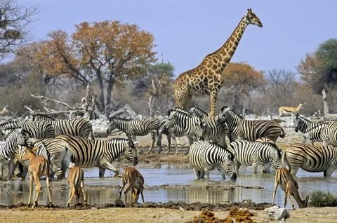

hayvonot bog'i haqida qisqacha

Termiz hayvonot bog'i 1934 yilda viloyat o'lkashunoslik muzeyining tabiat bo'limida tashkil etilgan. 1939 yilda muzeyning tabiat bo'limi hayvonot bog'iga aylantirilgan.
Termiz hayvonot bog'i O'zbekistondagi ikkinchi haybonot
bog'i hisoblanadi(Birinchisi Toshkent shahrida).

Termiz hayvonot bog'ida 127 tur, 756 bosh hayvonlar turi va soniga ko'ra 4ta bo'limdan iborat.
-
Tuyoqlilar:
- 22 turkum, 40 bosh.
-
Yirtqichlar:
- 23 turkum, 41 bosh.
-
Qushlar:
- 60 turkum, 546 bosh.
-
Baliqlar va Sudralib yuruvchilar:
- 22 turkum, 129 bosh.

2021-yilrda amalga oshirilishi rejaralashtirilgan ish rejaga asosan Termiz hayvonot bog'ini Yevro-Osiyo zoopark va akvariumlar assotsiyasiga a'zo bo'lishi va ishchi hodimlarning malaka oshirish ishlari rejalashtirilmoqda.
2021-yilda amalga oshirilishi rejaralashtirilgan ish rejaga asosan Termiz hayvonot bog'ini Yevro-Osiyo zoopark va akvariumlar assotsiyasiga a'zo bo'lishi va ishchi hodimlarning malaka oshirish ishlari rejalashtirilmoqda.Ushbu masala yuzasidan Termiz hayvonot bog'i ma'muriyati tomonidan 2021-yil 22-aprel kuni J\h01-13174-I-sonli aloqa xati chiqarilgan. 2021-yil iyun oyida o'tkazilgan tadbirlar soni jami 6 ta, qatnashuvchilar soni 180 ta!